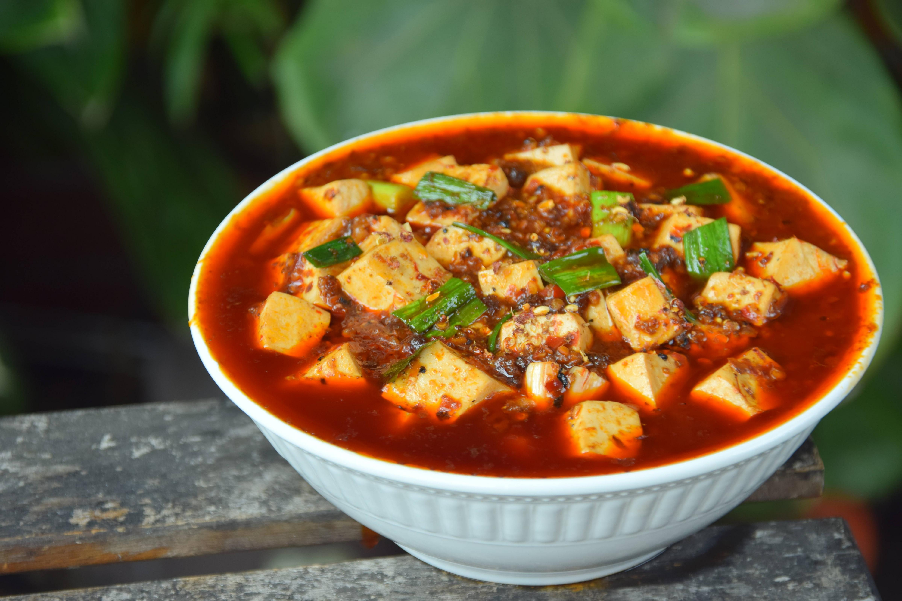

Mapo Tofu (麻婆豆腐)

The following recipe was found in r/cooking and made by the co-creator of Chinese Cooking Demystified. See the original post here!
Overview
"Mapo tofu (Chinese: 麻婆豆腐; pinyin: mápó dòufu) is a popular Chinese dish from Sichuan province. It consists of tofu set in a spicy sauce, typically a thin, oily, and bright red suspension, based on douban (fermented broad bean and chili paste), and douchi (fermented black beans), along with minced meat, traditionally beef. Variations exist with other ingredients such as water chestnuts, onions, other vegetables, or wood ear fungus. It is likely to have originated at a Chengdu restaurant in the 1860s–1870s" - Wikipedia
Ingredients
- Soft Tofu
- Minced Beef
- Peanut Oil or Caiziyou (virgin rapeseed oil)
- Sichuan peppercorns
- Sichuan Chili Bean Paste
- Chili flakes
- Douchi (豆豉)
- Minced Aromatics: 4 Cloves Garlic, 2 inches ginger
- Chicken or Oyster Stock
- Green Garlic or Scallions
- Seasoning:
- 1 tbsp light soy sauce
- 1 tbsp Shaoxing wine
- 1/4 tsp MSG
- 1/4 tsp white pepper powder
- 1/2 tbsp toasted sesame oil
- Slurry of 1 tbsp cornstarch mixed with ~1-2 tbsp water.
Process
- Slice the tofu into one inch cubes. Slice your tofu in half horizontally. Then, slice down to get one inch strips, and finally cut in the other direction to get one inch cubes.
- Get a small pot of water up to a boil, and add in ½ tsp of salt. Add enough water so that it’d be able to submerge the tofu. ~3 inches, but it depends on the size of your pot. This step isn’t a science, promise.
- Lower to a heavy simmer, carefully add in tofu cubes. Simmer for ~3 minutes. Leave tofu cubes in the hot water until you’re ready to cook. Unlike gypsum tofu, brined tofu has a slight grassy taste. This blanch in salt water will remove that taste, and also help firm the tofu up a touch. Leave the tofu in the hot water until you’re good to use it.
- Toast and grind the Sichuan peppercorns. Add your Sichuan peppercorns to a wok and toast for ~1-2 minutes over a medium low flame. You’ll know you’re done once you can see little oil splotches on the side of your wok, like this (sorry, I know that pic’s a bit dark). Then transfer over to a mortar – or whatever your spice grinding method of choice is – and get into a nice powder.
- Slice the green garlic, mince the garlic, mince the ginger, roughly chop the douchi fermented beans, mince the chili bean paste. I know mincing the chili bean paste might seem like a weird step, but the good ones are pretty chunky. Chomping down on a big salty bean isn’t ideal.
- Make the Mapo Tofu. Begin by stir-frying. As always, first longyau: get your wok piping hot, shut off the heat, add in the oil, and give it a swirl to get a nice non-stick surface. Heat on medium high now, heat the oil up until bubbles start to form around a pair of chopsticks (~170C), then:
- Drop in the beef mince. Fry for ~four minutes. You’re not looking to get your beef mince to ‘done’: you’re looking to get that mince PAST done. You want the beef to become crispy and release the oil. See this picture? Not there yet. This is what you’re looking for. The oil should be clear again.
- Shut off the heat. Add in the chili bean paste, begin to fry. Make sure it’s not burning, then swap the flame back to medium-low.
- Fry the chili bean paste for ~90 seconds to color and flavor the oil. This step is called ‘making the red oil’ (做出红油), and it’s probably the most critical part of the whole operation. Optimal temperature to fry chili bean paste in oil is 100-110C. If you’ve ever made some Pixian Douban-based dishes and have struggled with color, it’s because you’re either doing this step at too high of a heat, or not long enough.
- Minced douchi, in. Quick mix.
- Aromatics, in. Quick mix.
- Chili flakes, in. Fry everything together for ~one minute until it’s all a nice even paste.
- Add in the stock.
- Drain the tofu cubes, then toss them in. Carefully arrange, make sure not to break the tofu.
- Swap flame to medium high, get up to heavy simmer.
- Simmer everything for ~7 minutes, or until reduced by about one third. While simmering, carefully push the tofu back and forth to prevent sticking.
- Add in the seasoning.
- Add in HALF the slurry. Allow to thicken. If thickened to your liking, proceed to the next step. If not, add in the remainder of the slurry. Reducing’s not a science, so doing it this way helps ensure that you’re not over thickening.
- Add in the green garlic. Mix and cook for ~30 seconds (~15 seconds if using scallions).
- Sprinkle over the Sichuan peppercorn powder. Heat off, out.
Credit: Chinese Cooking Demysitfied Youtube Video